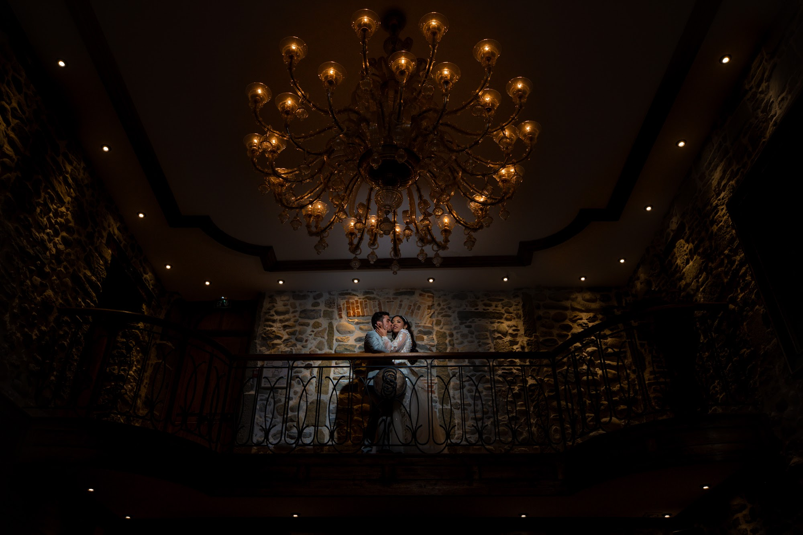
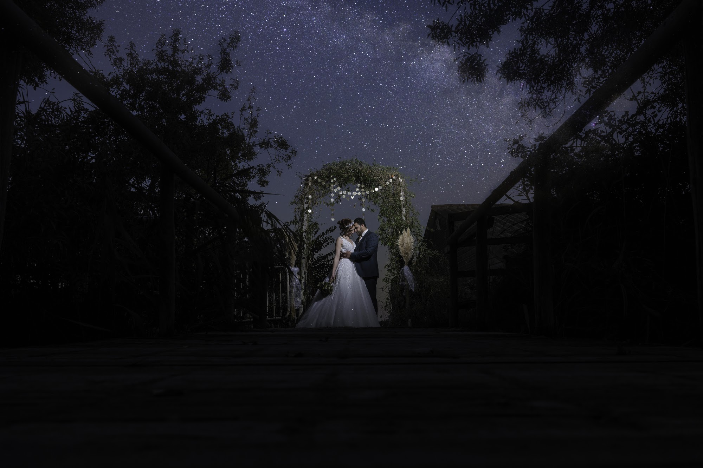
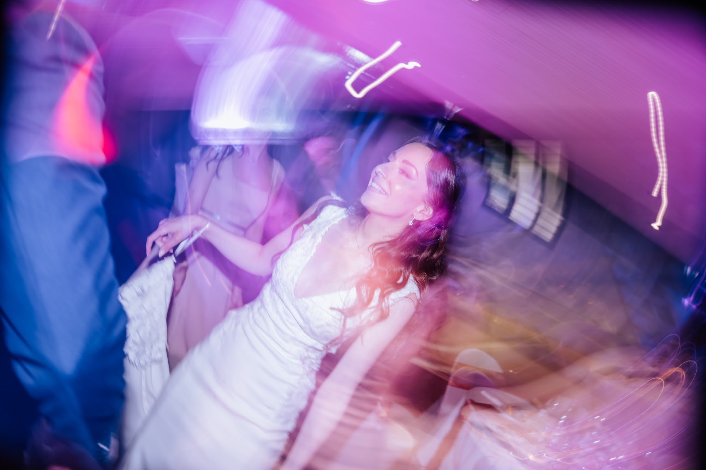
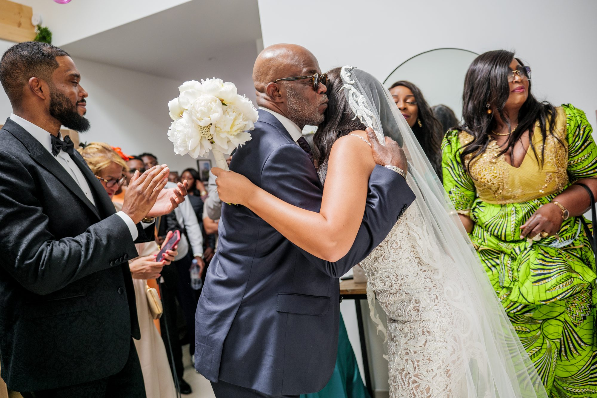

Corporate event photographer in Lyon: the organizer's checklist
The success of a business gathering relies on months of careful planning and an acute attention to detail. Hiring a corporate event photographer in Lyon is a decisive step to keep a tangible record of these efforts and the energy of your teams. I share here my working method and the essential points to validate with your creative partner to obtain elegant, natural images that are true to your brand.

Defining the visual atmosphere of your corporate reportage
Every company possesses its own culture and a unique way of interacting with its employees. Before discussing practical logistics, I find it fundamental to define the atmosphere you want to give to your visual coverage. A young tech startup might look for bright, dynamic, and candid images during collaborative workshops. An accounting firm organizing an executive board meeting will likely expect sober framing, deep contrasts, and a more formal elegance.
I take the time to listen to your vision in order to adjust my aesthetic approach. My photographic style relies heavily on natural light to sculpt faces and give depth to workspaces. I focus on capturing the texture of fine paper on a desk, the reflection of a large window on a meeting table, or the warmth of dim lighting. Understanding your company's identity helps me make precise technical choices, ensuring the final image series is an exact reflection of your professionalism.
The importance of location scouting in the Rhône region
The Lyon region offers an impressive variety of settings to host professional teams. Organizing a plenary session in an industrial space in the Confluence district does not require the same approach as a dinner in a Beaujolais wine estate or an executive retreat in a Monts d'Or castle. The role of the person holding the camera is to absorb the architecture and spatial constraints of these venues.
I systematically study the layout of conference rooms and outdoor reception areas. This anticipation allows me to know exactly where to stand to capture a speaker's entrance on stage without obstructing the audience's view. The huge glass panels of an estate in Isère or the thick golden stone walls of a manor in the Rhône dictate how I adjust my exposure. Knowing the working ground helps to play with harsh midday shadows or metallic reflections to do justice to the setting you carefully selected.

Anticipating the schedule with your corporate event photographer in Lyon
The rhythm of a study day is often intense, timed down to the minute. For a corporate event photographer in Lyon to document all the highlights, a very clear vision of your schedule is needed. I ask to receive the detailed program several weeks before the convention day. Knowing the precise time the opening speech begins gives me the chance to test my focal lengths and find a clear angle before silence settles in.
The breathing spaces in the schedule are equally crucial moments to document. It is often around a hot coffee that the most honest conversations between colleagues take place. If I know the meal is a standing cocktail in the gardens, I organize my movements to follow the groups that form organically. Successful photographic documentation requires always being in the right place, one step ahead.
Navigating the light during a corporate evening party
When the sun sets, the mood of a convention changes radically to make way for relaxation. Photographing a corporate evening requires specific technical mastery to preserve the warmth of ambient lights without flattening the image by systematically using a direct flash. Gala rooms are often plunged into near darkness, lit only by colored spotlights or simple candles on the tables.
I work with very wide-aperture lenses that catch the slightest fragment of light. This discreet approach preserves the hushed atmosphere of your event. Faces are illuminated by the golden glow of candles or the reflections of stage lights. I aim to freeze the motion of lively discussions, the clinking of crystal glasses, and the silhouettes standing out on the dance floor, while keeping the natural grain specific to nocturnal atmospheres.

The subtle art of documenting informal interactions
The most telling photographs of a corporate gathering are rarely those where participants stare at the lens with a polite smile. My goal is to show the human being behind the job title. I move among your guests with measured gestures to observe collective dynamics without interrupting them.
A concentrated look at a computer screen, a shared burst of laughter during a team-building activity, or a firm handshake at the end of a negotiation are the scenes that give substance to your internal narrative. These images convey the cohesion of your teams much more effectively than a stiff pose against a white wall. This absolute discretion allows your employees to forget the camera's presence and remain natural throughout the day.

Crafting a clear brief for key people and details
In an assembly of several hundred people, it is easy to lose sight of the central actors of the day. The specifications we draw up together must list the management board members, guest speakers, and VIP clients present. I often ask for a simplified face chart of the people not to be missed.
This preparation ensures I document the interactions of your CEO or the keynote of your main guest from the best angles. It is also useful to specify the logistical details you want to highlight: a newly launched product on display, a banner featuring a major partner's colors, or a buffet prepared by a local Michelin-starred chef. These context images are valuable assets for thanking your sponsors and illustrating your future communication materials.
Planning the final delivery and image usage
The lifespan of a corporate reportage goes far beyond the event itself. From our very first meeting, we discuss the final destination of the files. Framing requirements differ if the photograph is intended for the cover of a printed annual report, to illustrate a social media post, or to feed the company's intranet network.
I always plan negative space in my compositions, those empty areas that allow your graphic designer to insert text or a logo with ease. The color grading is then done with the same care as my portrait or fashion work. Skin tones remain natural, contrasts are elegant, and whites are pure, delivering high-end visual material ready to be shared with your teams and the press.
Frequently asked questions
How far in advance should we contact a corporate event photographer in Lyon?
Business conventions often concentrate on Tuesdays and Thursdays during specific busy periods of the year. I recommend securing my presence several months before your event to guarantee my availability.
Is it necessary to provide a minute-by-minute schedule?
A precise timeline of speeches and breaks is a great help to anticipate my positioning. It allows me to cover all the highlights without ever running frantically from one room to another.
Can you deliver images on the same day for our social media?
We can absolutely agree on sending a dozen quickly edited photographs on the day itself to fuel your live communication. The complete processing of the reportage then takes a few days to ensure perfect visual consistency.
How do you work in dark meeting rooms without a flash?
The use of professional camera bodies and fast lenses allows me to work in natural light even in challenging conditions. The flash is only used as a last resort so as not to disrupt the audience's attention.
Ready to organize your next business gathering? Contact me to discuss the visual approach that will best document your teams in action.
Let’s talk about your project